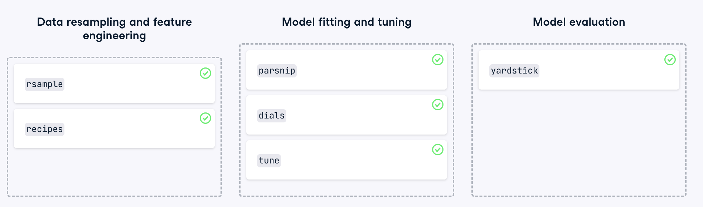
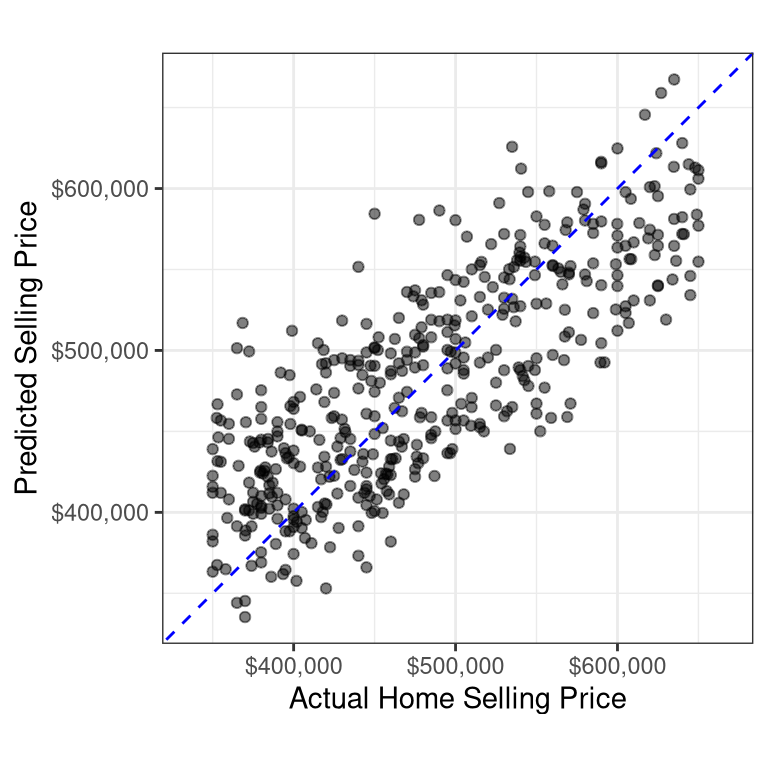
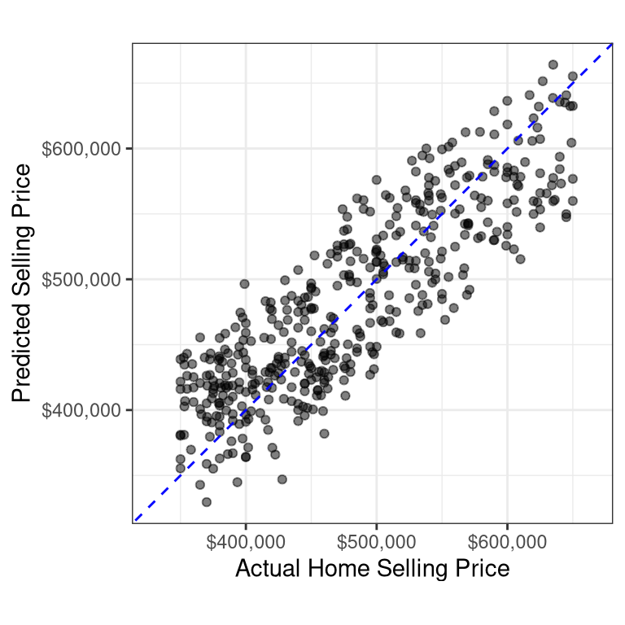

1 Machine Learning with tidymodels
In this chapter, you’ll explore the rich ecosystem of R packages that power tidymodels (Kuhn and Wickham 2024) and learn how they can streamline your machine learning workflows. You’ll then put your tidymodels skills to the test by predicting house sale prices in Seattle, Washington.
The tidymodels ecosystem video
1.1 Tidymodels packages
tidymodels is a collection of machine learning packages designed to simplify the machine learning workflow in R.
In this exercise, you will assign each package within the tidymodels ecosystem to its corresponding process within the machine learning workflow.
The core packages within tidymodels are designed to help with every stage in a machine learning workflow.
1.2 Creating training and test datasets
The rsample package (Frick et al. 2024) is designed to create training and test datasets. Creating a test dataset is important for estimating how a trained model will likely perform on new data. It also guards against overfitting, where a model memorizes patterns that exist only in the training data and performs poorly on new data.
In this exercise, you will create training and test datasets from the home_sales data. This data contains information on homes sold in the Seattle, Washington area between 2015 and 2016.
The outcome variable in this data is selling_price.
The tidymodels package will be pre-loaded in every exercise in the course. The home_sales tibble has also been loaded for you.
library(tidymodels)
home_sales <- readRDS("./data/home_sales.rds")
head(home_sales)# A tibble: 6 × 8
selling_price home_age bedrooms bathrooms sqft_living sqft_lot sqft_basement
<dbl> <dbl> <dbl> <dbl> <dbl> <dbl> <dbl>
1 487000 10 4 2.5 2540 5001 0
2 465000 10 3 2.25 1530 1245 480
3 411000 18 2 2 1130 1148 330
4 635000 4 3 2.5 3350 4007 800
5 380000 24 5 2.5 2130 8428 0
6 495000 21 3 3.5 1650 1577 550
# ℹ 1 more variable: floors <dbl>Instructions
- Create an
rsampleobject,home_split, that contains the instructions for randomly splitting thehome_salesdata into a training and test dataset. Allocate 70% of the data into training and stratify the results byselling_price.
set.seed(156)
# Create a data split object
home_split <- initial_split(home_sales,
prop = 0.70,
strata = selling_price)
home_split<Training/Testing/Total>
<1042/450/1492>- Create a training dataset from
home_splitcalledhome_training.
# Create the training data
home_training <- home_split |>
training()
str(home_training)tibble [1,042 × 8] (S3: tbl_df/tbl/data.frame)
$ selling_price: num [1:1042] 380000 355000 356000 381000 398000 ...
$ home_age : num [1:1042] 24 19 24 25 14 9 37 30 26 7 ...
$ bedrooms : num [1:1042] 5 3 2 3 3 3 3 3 3 3 ...
$ bathrooms : num [1:1042] 2.5 2.25 1 2 1.5 2.5 2.25 2.25 2.5 2.25 ...
$ sqft_living : num [1:1042] 2130 1430 1430 1680 1310 1600 1410 1410 1600 1410 ...
$ sqft_lot : num [1:1042] 8428 4777 365904 8946 2996 ...
$ sqft_basement: num [1:1042] 0 0 420 740 0 0 120 120 0 120 ...
$ floors : num [1:1042] 2 2 1 1 2 2 2 2 2 2 ...- Create the
home_testtibble by passinghome_splitinto the appropriate function for generating test datasets.
# Create the test data
home_test <- home_split |>
testing()
str(home_test)tibble [450 × 8] (S3: tbl_df/tbl/data.frame)
$ selling_price: num [1:450] 411000 425000 535000 559900 552321 ...
$ home_age : num [1:450] 18 11 3 20 29 6 22 25 26 24 ...
$ bedrooms : num [1:450] 2 4 4 3 3 3 3 3 5 3 ...
$ bathrooms : num [1:450] 2 2.5 2.75 2.75 2.5 2.25 2.5 2.5 3.75 2.25 ...
$ sqft_living : num [1:450] 1130 1920 2360 2930 1960 ...
$ sqft_lot : num [1:450] 1148 9000 15100 5569 8469 ...
$ sqft_basement: num [1:450] 330 0 0 1070 0 350 0 0 0 145 ...
$ floors : num [1:450] 2 2 1 1 2 2 2 2 2 2 ...- Check the number of rows in the training and test datasets by passing them into the
nrow()function.
# Check number of rows in each dataset
nrow(home_training)[1] 1042nrow(home_test)[1] 450
Note
Since the home_sales data has 1492 rows, it is appropriate to allocate more rows into the test set. This will provide more data for the model evaluation step.
1.3 Distribution of outcome variable values
Stratifying by the outcome variable when generating training and test datasets ensures that the outcome variable values have a similar range in both datasets.
Since the original data is split at random, stratification avoids placing all the expensive homes in home_sales into the test dataset, for example. In this case, your model would most likely perform poorly because it was trained on less expensive homes.
In this exercise, you will calculate summary statistics for the selling_price variable in the training and test datasets. The home_training and home_test tibbles have been loaded from the previous exercise.
Instructions
- Calculate the minimum, maximum, mean, and standard deviation of the
selling_pricevariable inhome_training.
# Distribution of selling_price in training data
home_training |>
summarize(min_sell_price = min(selling_price),
max_sell_price = max(selling_price),
mean_sell_price = mean(selling_price),
sd_sell_price = sd(selling_price)) |>
kable()| min_sell_price | max_sell_price | mean_sell_price | sd_sell_price |
|---|---|---|---|
| 350000 | 650000 | 478448.6 | 80394.43 |
- Calculate the minimum, maximum, mean, and standard deviation of the
selling_pricevariable inhome_test.
# Distribution of selling_price in test data
home_test |>
summarize(min_sell_price = min(selling_price),
max_sell_price = max(selling_price),
mean_sell_price = mean(selling_price),
sd_sell_price = sd(selling_price)) |>
kable()| min_sell_price | max_sell_price | mean_sell_price | sd_sell_price |
|---|---|---|---|
| 350000 | 650000 | 480556.9 | 82387.91 |
Note
The minimum and maximum selling prices in both datasets are the same. The mean and standard deviation are also similar. Stratifying by the outcome variable ensures the model fitting process is performed on a representative sample of the original data.
Linear regression with tidymodels video
1.4 Fitting a linear regression model
The parsnip package (Kuhn and Vaughan 2024) provides a unified syntax for the model fitting process in R.
With parsnip, it is easy to define models using the various packages, or engines, that exist in the R ecosystem.
In this exercise, you will define a parsnip linear regression object and train your model to predict selling_price using home_age and sqft_living as predictor variables from the home_sales data.
The home_training and home_test tibbles that you created in the previous lesson have been loaded into this session.
Instructions
- Initialize a linear regression object,
linear_model, with the appropriateparsnipfunction. Use the"lm"engine. Set the mode to"regression".
# Initialize a linear regression object, linear_model
linear_model <- linear_reg() |>
# Set the model engine
set_engine('lm') |>
# Set the model mode
set_mode('regression')
linear_modelLinear Regression Model Specification (regression)
Computational engine: lm - Train your model to predict
selling_priceusinghome_ageandsqft_livingas predictor variables from thehome_trainingdataset. Printlm_fitto view the model information.
# Train the model with the training data
lm_fit <- linear_model |>
fit(selling_price ~ home_age + sqft_living,
data = home_training)
# Print lm_fit to view model information
lm_fitparsnip model object
Call:
stats::lm(formula = selling_price ~ home_age + sqft_living, data = data)
Coefficients:
(Intercept) home_age sqft_living
291587.2 -1550.0 103.8 tidy(lm_fit) |>
kable()| term | estimate | std.error | statistic | p.value |
|---|---|---|---|---|
| (Intercept) | 291587.211 | 7445.953323 | 39.160494 | 0 |
| home_age | -1549.992 | 173.052920 | -8.956754 | 0 |
| sqft_living | 103.789 | 2.706057 | 38.354335 | 0 |
Note
You have defined your model with linear_reg() and trained it to predict selling_price using home_age and sqft_living. Printing a parsnip model fit object displays useful model information, such as the training time, model formula used during training, and the estimated model parameters.
1.5 Exploring estimated model parameters
In the previous exercise, you trained a linear regression model to predict selling_price using home_age and sqft_living as predictor variables.
Your trained model, lm_fit, has been loaded into this session.
Pass your trained model object, lm_fit into the appropriate function to explore the estimated model parameters.
Which of the following statements is correct?
The standard error, std.error, for the
sqft_livingpredictor variable is 175.The estimated parameter for the
home_agepredictor variable is 305.The estimated parameter for the
sqft_livingpredictor variable is 104.The estimated intercept is 127825.
Note
The tidy() function automatically creates a tibble of estimated model parameters. Since sqft_living has a positive estimated parameter, the selling price of homes increases with the square footage. Conversely, since home_age has a negative estimated parameter, older homes tend to have lower selling prices.
Predicting home selling prices
After fitting a model using the training data, the next step is to use it to make predictions on the test dataset. The test dataset acts as a new source of data for the model and will allow you to evaluate how well it performs.
Before you can evaluate model performance, you must add your predictions to the test dataset.
In this exercise, you will use your trained model, lm_fit, to predict selling_price in the home_test dataset.
Your trained model, lm_fit, as well as the test dataset, home_test have been loaded into your session.
Instructions
- Create a tibble,
home_predictions, that contains the predicted selling prices of homes in the test dataset.
# Predict selling_price
home_predictions <- predict(lm_fit,
new_data = home_test)
# View predicted selling prices
head(home_predictions) |>
kable()| .pred |
|---|
| 380968.9 |
| 473812.2 |
| 531879.3 |
| 564689.1 |
| 450063.9 |
| 535532.4 |
- Create a tibble with the
selling_price,home_age, andsqft_livingcolumns from the test dataset and the predicted home selling prices.
# Combine test data with predictions
home_test_results <- home_test |>
select(selling_price, home_age, sqft_living) |>
bind_cols(home_predictions)
head(home_test_results) |>
kable()| selling_price | home_age | sqft_living | .pred |
|---|---|---|---|
| 411000 | 18 | 1130 | 380968.9 |
| 425000 | 11 | 1920 | 473812.2 |
| 535000 | 3 | 2360 | 531879.3 |
| 559900 | 20 | 2930 | 564689.1 |
| 552321 | 29 | 1960 | 450063.9 |
| 485000 | 6 | 2440 | 535532.4 |
Note
You have trained a linear regression model and used it to predict the selling prices of homes in the test dataset! The model only used two predictor variables, but the predicted values in the .pred column seem reasonable!
Evaluating model performance video
1.6 Model performance metrics
Evaluating model results is an important step in the modeling process. Model evaluation should be done on the test dataset in order to see how well a model will generalize to new datasets.
In the previous exercise, you trained a linear regression model to predict selling_price using home_age and sqft_living as predictor variables. You then created the home_test_results tibble using your trained model on the home_test data.
In this exercise, you will calculate the RMSE and \(R^2\) metrics using your results in home_test_results.
The home_test_results tibble has been loaded into your session.
Instructions
- Execute the first two lines of code which print the
home_test_results. This tibble contains the actual and predicted home selling prices in thehome_test dataset. Usinghome_test_results, calculate the RMSE and R squared metrics.
# Print home_test_results
head(home_test_results)# A tibble: 6 × 4
selling_price home_age sqft_living .pred
<dbl> <dbl> <dbl> <dbl>
1 411000 18 1130 380969.
2 425000 11 1920 473812.
3 535000 3 2360 531879.
4 559900 20 2930 564689.
5 552321 29 1960 450064.
6 485000 6 2440 535532.# Calculate the RMSE metric
home_test_results |>
rmse(truth = selling_price, estimate = .pred) -> ARMSE
kable(ARMSE)| .metric | .estimator | .estimate |
|---|---|---|
| rmse | standard | 49988.89 |
# Same as
home_test_results |>
summarize(RMSE = sqrt(mean((selling_price - .pred)^2)))# A tibble: 1 × 1
RMSE
<dbl>
1 49989.# Calculate the R squared metric
home_test_results |>
rsq(truth = selling_price, estimate = .pred) -> AR2
kable(AR2)| .metric | .estimator | .estimate |
|---|---|---|
| rsq | standard | 0.6315395 |
# Same as
home_test_results |>
summarize(R2 = cor(selling_price, .pred)^2)# A tibble: 1 × 1
R2
<dbl>
1 0.632
Note
The RMSE metric indicates that the average prediction error for home selling prices is $49,988.89. Not bad considering you only used home_age and sqft_living as predictor variables!
1.7 R squared plot
In the previous exercise, you got an \(R^2\) value of . The \(R^2\) metric ranges from 0 to 1, 0 being the worst and 1 the best.
Calculating the \(R^2\) value is only the first step in studying your model’s predictions.
Making an \(R^2\) plot is extremely important because it will uncover potential problems with your model, such as non-linear patterns or regions where your model is either over or under-predicting the outcome variable.
In this exercise, you will create an \(R^2\) plot of your model’s performance.
The home_test_results tibble has been loaded into your session.
Instructions
- Create an \(R^2\) plot of your model’s performance. The x-axis should have the actual selling price and the y-axis should have the predicted values. Use the appropriate functions to add the line \(y = x\) to your plot and standardize the range of both axes.
# Create an R squared plot of model performance
ggplot(home_test_results, aes(x = selling_price, y = .pred)) +
geom_point(alpha = 0.5) +
geom_abline(color = 'blue', linetype = "dashed") +
coord_obs_pred() +
labs(x = 'Actual Home Selling Price', y = 'Predicted Selling Price') +
theme_bw()
Note
From the plot, you can see that your model tends to over-predict selling prices for homes that sold for less than $400,000, and under-predict for homes that sold for $600,000 or more. This indicates that you will have to add more predictors to your model or that linear regression may not be able to model the relationship as well as more advanced modeling techniques!
1.8 Complete model fitting process with last_fit()
In this exercise, you will train and evaluate the performance of a linear regression model that predicts selling_price using all the predictors available in the home_sales tibble.
This exercise will give you a chance to perform the entire model fitting process with tidymodels, from defining your model object to evaluating its performance on the test data.
Earlier in the chapter, you created an rsample object called home_split by passing the home_sales tibble into initial_split(). The home_split object contains the instructions for randomly splitting home_sales into training and test sets.
The home_sales tibble, and home_split object have been loaded into this session.
Instructions
- Use the
linear_reg()function to define a linear regression model object. Use thelmengine.
# Define a linear regression model
linear_model <- linear_reg() |>
set_engine("lm") |>
set_mode("regression")- Train your linear regression object with the
last_fit()function. In your model formula, useselling_priceas the outcome variable and all other columns as predictor variables. Create a tibble with the model’s predictions on the test data.
# Train linear_model with last_fit()
linear_fit <- linear_model |>
last_fit(selling_price ~ ., split = home_split)
# Collect predictions and view results
predictions_df <- linear_fit |>
collect_predictions()
predictions_df |>
head() |>
kable()| .pred | id | .row | selling_price | .config |
|---|---|---|---|---|
| 397707.5 | train/test split | 3 | 411000 | Preprocessor1_Model1 |
| 440709.5 | train/test split | 9 | 425000 | Preprocessor1_Model1 |
| 487982.5 | train/test split | 10 | 535000 | Preprocessor1_Model1 |
| 586699.0 | train/test split | 14 | 559900 | Preprocessor1_Model1 |
| 469003.7 | train/test split | 15 | 552321 | Preprocessor1_Model1 |
| 561843.3 | train/test split | 17 | 485000 | Preprocessor1_Model1 |
- Create an \(R^2\) plot of the model’s performance. The x-axis should have the actual selling price and the y-axis should have the predicted values.
# Make an R squared plot using predictions_df
ggplot(predictions_df, aes(x = selling_price, y = .pred)) +
geom_point(alpha = 0.5) +
geom_abline(color = 'blue', linetype = "dashed") +
coord_obs_pred() +
labs(x = 'Actual Home Selling Price', y = 'Predicted Selling Price') +
theme_bw()
Note
You have created your first machine learning pipeline and visualized the performance of your model. From the \(R^2\) plot, the model still tends to over-predict selling prices for homes that sold for less than $400,000 and under-predict for homes at $600,000 or more, but it is a slight improvement over your previous model with only two predictor variables.